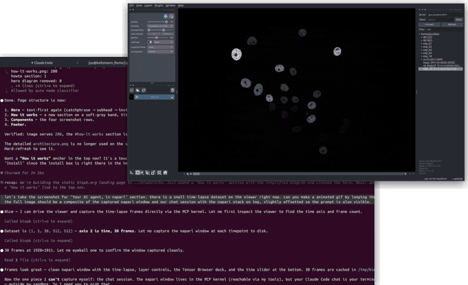

Your workspace
Your AI agent, in napari
Drive a live napari viewer through an AI agent. One install command registers biopb with Claude Code, Cursor or your favorite AI assistant — then ask for the analysis you actually want. Intermediate results rendered in the viewer; counts, measurements, and explanations come back in chat. You control the iteration.